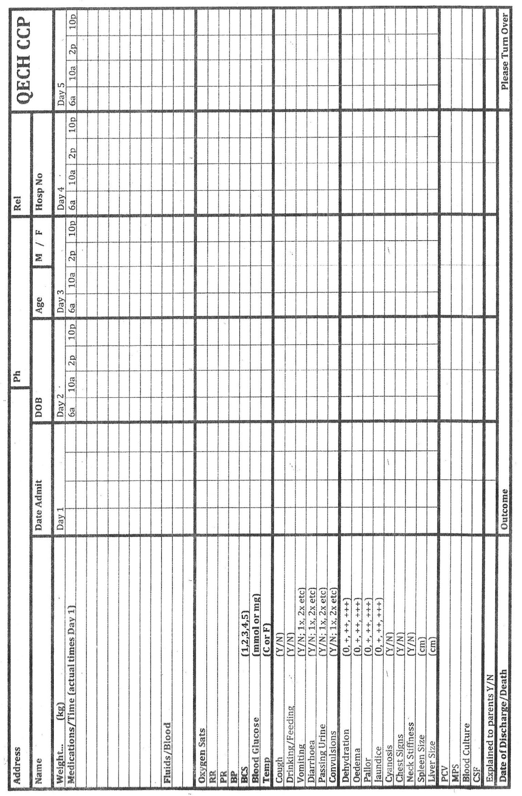
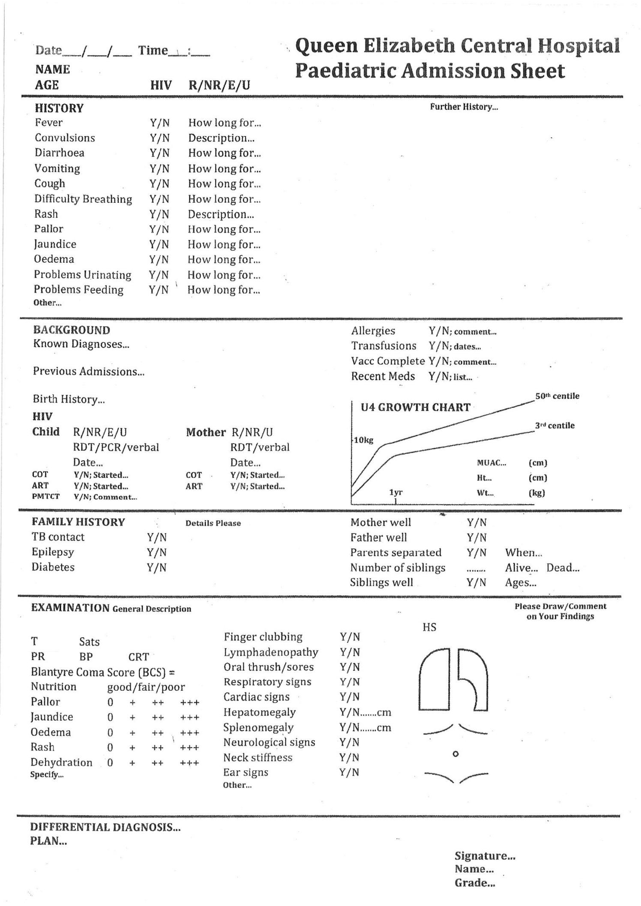

The Critical Care Pathway (CCP) has been designed to improve patient care, and to aid the clinician with the management of each child. It provides an excellent means of recording information, of prescribing medication, and monitoring the progress of every child.
On admission the back page of the CCP should be completed in full. This page relates to the presenting complaints of the child, the past medical history, drug history, and relevant family history.
Much information will be gained from the health passport of the patient (and possibly the mother, i. e. birth history, HIV/VDRL status), so please refer to this when filling in the CCP.
There is a weight-for-age graph that should be copied from the passport.
The lower half of the CCP relates to the examination findings on admission which should contain all relevant findings as well as normal findings if they help with the differential diagnoses.
Finally there is a space at the bottom of the page for the working diagnosis. If this page is filled in thoroughly, there will be no need for additional history/examination on further bits of paper. A very complicated case with an extensive history might be the only exception.
On the reverse side of the CCP, medications are prescribed, vital signs are recorded and progress is monitored.
The first "column" is filled in on admission, and successive "columns" are filled in on each further day that the child remains in hospital. It is the responsibility of the clinician who sees the patient to do this. On some wards the nurses might be in charge of it - find out about the current procedure. This will allow a clinician seeing the child for the first time to gain an impression of whether or not there has been an improvement or deterioration.
If the child is sick and being reviewed other than once per day, please fill in a section of the daily "column" every time the child is seen, being sure to note the time that this is done. The vital signs should be recorded at each review in the appropriate box at the bottom of each column.
There is also space for laboratory results (MPS, PCV, blood glucose, CSF). Please record results where available, or indicate that the test has not been done.
Finally there is space to indicate that you have discussed with parents/guardians/the child about the diagnosis, treatment and prognosis.

